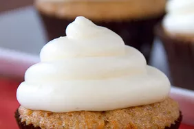

Carrot Cake Cupcakes

Description
Carrot cake (also known as passion cake) is cake that contains carrots mixed into the batter.
Ingredients
- 1 and 1/3 cups of all-purpose flour (spooned & leveled)
- 1 teaspoon baking powder
- 1/2 teaspoon baking soda
- 1/2 teaspoon salt
- 1 teaspoon ground cinnamon
- 3/4 teaspoon ground ginger
- 1/4 teaspoon ground nutmeg
- 1/2 cup (120ml) vegetable oil
- 1 cup (200g) packed light or dark brown sugar
- 2 large eggs, at room temperature
- 1/3 cup (80g) unsweetened applesauce, sour cream, or plain yogurt, at room temperature
- 1 teaspoon pure vanilla extract
- 1 and 1/2 cups (200g) peeled, shredded, and coarsely chopped carrots* (about 3 large carrots)
- optional add-in: 3/4 cup chopped walnuts or pecans; raisins
Steps
- Preheat the oven to 350°F (177°C). Line a 12-cup muffin pan with cupcake liners.
- Whisk the flour, baking powder, baking soda, salt, cinnamon, ginger, and nutmeg together in a large bowl. Set aside. Whisk the oil, brown sugar, eggs, applesauce, and vanilla extract together until combined, and then whisk in the carrots. Pour the wet ingredients into the dry ingredients and fold or whisk together until completely combined. Batter will be slightly thick.
- Pour/spoon the batter into the liners, filling only about 3/4 full to avoid spilling over the sides. Bake for 21–23 minutes, or until a toothpick inserted in the center comes out clean. For around 30 mini cupcakes, bake for about 12–13 minutes, same oven temperature. Allow the cupcakes to cool completely before frosting.
- Meanwhile, make the frosting: Meanwhile, make the frosting: In a large bowl using a handheld or stand mixer fitted with a paddle or whisk attachment, beat the cream cheese and butter together on high speed until smooth and creamy. Add confectioners’ sugar, vanilla extract, and salt. Beat on low speed for 30 seconds and then switch to high speed and beat for 2 minutes. Cover and refrigerate the frosting as the cupcakes finish cooling—this is helpful if you plan to pipe the frosting with a piping bag + tip. Cold cream cheese frosting holds its shape better.
- Frost cooled cupcakes and top with optional garnish, if desired. I used an Ateco 808 piping tip and then swirled the center with a small icing spatula (you can see me do that in the video—totally optional way of decorating). Cover and store leftover cupcakes in the refrigerator for up to 5 days.
Go back to homepage